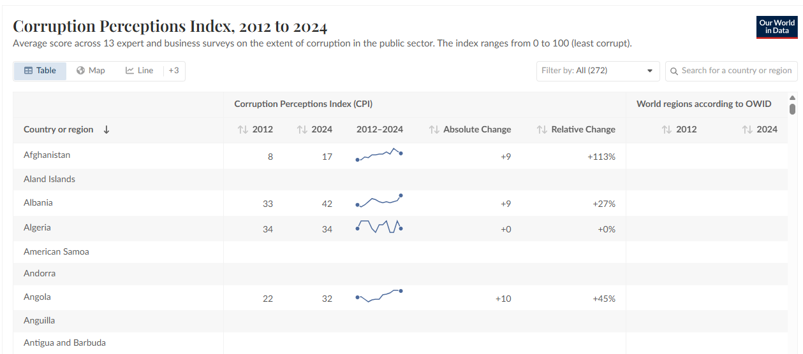

Fonte: Transparency International (CPI), com processamento mínimo do Our World in Data.
Escolha os paises, separados por continente. Cada pais tem duas barras coladas: azul = 2012 e vermelho = 2024 (CPI de 0 a 100, eixo começando em zero). Quando há mais de um continente, eles aparecem separados no gráfico.
· Ordenar dentro de cada continente por: ·
Escolha os países, separados por continente. Todos aparecem no mesmo gráfico e na mesma escala, para serem comparados em contexto. Passe o mouse sobre uma linha para destacá-la e ver o nome e o valor do ano; o nome do país também aparece no fim da linha. Cada país tem uma cor própria; quando há mais de 13 linhas as cores se repetem, e então o nome no fim da linha e o destaque ao passar o mouse identificam o país.
·